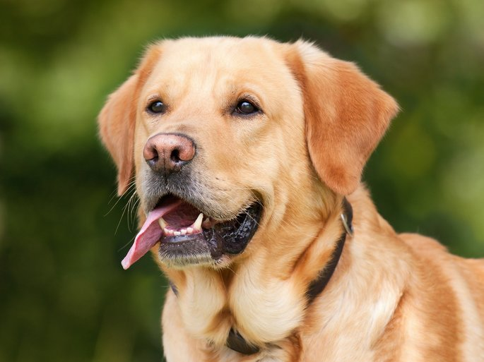
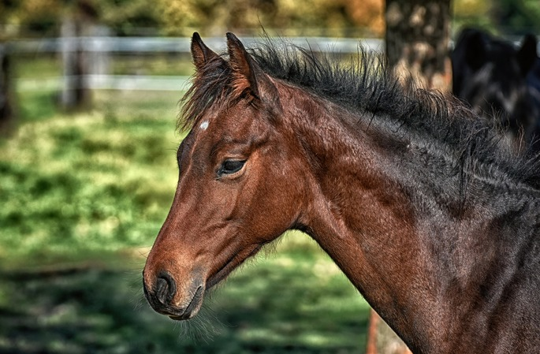

Cachorro
Canis familiaris
| Reino: | Animalia |
| Classe: | Mammalia |
O cão (nome científico: Canis lupus familiaris), no Brasil
também chamado de cachorro, é um mamífero carnívoro da família dos canídeos, subespécie do
lobo, e talvez o mais antigo animal domesticado pelo ser humano. Teorias postulam que surgiu do lobo
cinzento no continente asiático há mais de 100 000 anos. Ao longo dos séculos, através da domesticação, o
ser humano realizou uma seleção artificial dos cães por suas aptidões, características físicas ou tipos de
comportamento. O resultado foi uma grande diversidade de raças caninas, as quais variam em pelagem e tamanho
dentro de suas próprias raças, atualmente classificadas em diferentes grupos ou categorias. As designações
vira-lata (no Brasil) ou rafeiro (em Portugal) são dadas aos cães sem raça definida ou
mestiços descendentes.
Com expectativa de vida que varia entre dez e vinte anos, o cão é um animal social
que, na maioria das vezes, aceita o seu dono como o "chefe da matilha" e possui várias características que o
tornam de grande utilidade para o homem. Possui excelente olfato e audição, é bom caçador e corredor
vigoroso, relativamente dócil e leal, inteligente e com boa capacidade de aprendizagem. Deste modo, o cão
pode ser adestrado para executar um grande número de tarefas úteis, como um cão de caça, de guarda ou pastor
de rebanhos, por exemplo. Assim como o ser humano, também é vítima de doenças como o resfriado, a depressão
e o mal de Alzheimer, bem como das características do envelhecimento, como problemas de visão e audição,
artrite e mudanças de humor.
A afeição e a companhia deste animal são alguns dos motivos da famosa frase: "O
cão é o melhor amigo do homem", já que não há registro de amizade tão forte e duradoura entre
espécies distintas quanto a de humano e cão. Esta relação figura em filmes, livros e revistas, que citam,
inclusive, diferentes relatos reais de diferentes épocas e em várias nações. Entre os cães mais famosos que
viveram e marcaram sociedades estão Balto, Laika e Hachiko. Na mitologia, o Cérbero é dito um dos mais
assustadores seres. No cinema, Lassie é um dos mais difundidos nomes e, na animação, Pluto, Snoopy e
Scooby-Doo há décadas fazem parte da infância de várias gerações.
Cavalo
Equus caballus
| Reino: | Animalia |
| Classe: | Mammalia |
O cavalo (Equus ferus caballus) é uma das duas subespécies
existentes de Equus ferus. É um mamífero perissodáctilo pertencente à família taxonômica Equidae. O
cavalo evoluiu há entre 45 milhões a 55 milhões de anos, desde uma pequena criatura com vários dedos, o
Eohippus, até o animal grande e com um único dedo de hoje. Os seres humanos começaram a domesticar
cavalos por volta de 4000 a.C. e acredita-se que sua domesticação tenha sido disseminada em 3000 a.C. Os
cavalos da subespécie caballus são domesticados, embora algumas populações domesticadas vivam na
natureza como cavalos selvagens. Essas populações selvagens não são verdadeiros cavalos "selvagens", pois
esse termo é usado para descrever cavalos que nunca foram domesticados, como o cavalo de Przewalski, uma
espécie em perigo de extinção, uma subespécie separada e o único verdadeiro cavalo selvagem restante na
natureza. Existe um vocabulário extenso e especializado usado para descrever conceitos relacionados a
equinos, cobrindo de tudo, desde anatomia a estágios da vida, tamanho, cores, marcações, raças, locomoção e
comportamento.
Os cavalos são adaptados para correr, permitindo que eles escapem rapidamente dos
predadores, possuindo um excelente senso de equilíbrio e uma forte resposta de luta ou fuga. Relacionada a
essa necessidade de fugir dos predadores na natureza, há uma característica incomum: os cavalos são capazes
de dormir de pé e deitados, sendo que os mais jovens tendem a dormir significativamente mais do que os
adultos. As fêmeas, chamadas éguas, carregam seus filhotes por aproximadamente 11 meses e um cavalo jovem,
chamado potro, pode ficar de pé e correr logo após nascer. A maioria dos cavalos domesticados começa
a treinar em uma sela ou em um arreio entre as idades de dois e quatro anos. Eles atingem o desenvolvimento
adulto completo aos cinco anos de idade e têm uma vida útil média entre 25 e 30 anos.